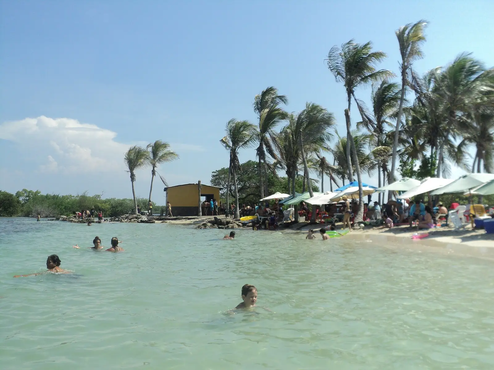

Cayo Sombrero
Qué se ve: Arena blanca, cocoteros y un mar que pasa del verde claro al azul.
Qué se hace: Caminar la playa, bañarse y ver peces cerca de los arrecifes.
Preguntar por este cayoAgua bajita, arena blanca y manglares, frente a Tucacas. A cuál se va depende del paseo y del mar de ese día.
Esta es Morrocoy vista desde el espacio. Los puntos y la ruta son aproximados, solo para orientarse.
 Tucacas
Tucacas

Qué se ve: Arena blanca, cocoteros y un mar que pasa del verde claro al azul.
Qué se hace: Caminar la playa, bañarse y ver peces cerca de los arrecifes.
Quiero ir a este cayoQué se ve: Arena blanca, cocoteros y un mar que pasa del verde claro al azul.
Qué se hace: Caminar la playa, bañarse y ver peces cerca de los arrecifes.
Preguntar por este cayo
Qué se ve: Una playa resguardada, con palmeras y el manglar cerca.
Qué se hace: Pasar el día en agua tranquila, ideal si va con los muchachos.
Preguntar por este cayo
Qué se ve: Arena blanca y agua clara, de las playas más conocidas del parque.
Qué se hace: Bañarse sin apuro y quedarse en la orilla, en familia o en pareja.
Preguntar por este cayo
Qué se ve: Un bajo de arena en medio del agua, con el mar muy bajito.
Qué se hace: Parar el barco y bañarse con el agua a la cintura.
Preguntar por este cayo
Qué se ve: Canales de agua quieta entre raíces de mangle.
Qué se hace: Pasar despacio y mirar las aves, que tienen aquí su refugio.
Preguntar por este cayo
Qué se ve: Agua tranquila y tibia, palmeras y su antigua salina. Queda hacia Chichiriviche.
Qué se hace: Un día de playa sereno, muy elegido por las familias.
Preguntar por este cayo
Qué se ve: Mar bajito y claro alrededor de un cayo de manglar. También queda hacia Chichiriviche.
Qué se hace: Bañarse en agua serena y mirar el fondo desde la orilla.
Preguntar por este cayoMorrocoy es parque nacional. Lo que se lleva al cayo, se regresa.

Díganos cuál y le respondemos qué paseo le conviene.
Reservar por WhatsApp